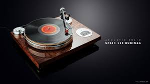
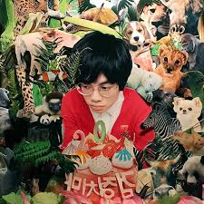
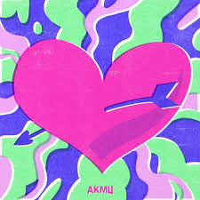
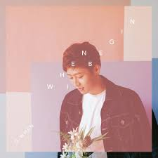

당신의 일상 속 다양한 상황과 감정을 압도적으로 담아내는 맞춤형 큐레이션
테마: #새벽_공기_아래서_듣기_좋은_노래

추천이유: 하루의 마침표를 찍는 시간, 다정한 목소리와 서정적인 멜로디가 당신의 새벽을 가장 따뜻하게 안아줍니다. 독서의 몰입도를 높여주는 배경음악으로 추천합니다.

추천 이유: 얼어붙은 일상을 녹이는 가장 뜨겁고도 다정한 선언 같은 곡입니다. "우린 하루 종일 아무것도 안 해도 괜찮아"라는 가사는 고요한 새벽, 나 자신과 마주하는 시간 속에서 깊은 위로를 건넵니다.
테마: #상쾌한_출근길_발걸음을_가볍게
추천이유: 밴드 사운드 특유의 청량한 기타 리프가 아침의 무거운 공기를 상쾌하게 바꿔줍니다.

추천이유: 통통 튀는 멜로디와 기분 좋아지는 가사로 출근길 발걸음을 가볍게 만들어줍니다.
테마: #하루를_마무리하는_위로의_시간
추천이유: 산뜻한 리듬과 가사가 하루의 마무리를 기분 좋게 만들어줍니다.

추천이유: 퇴근길이나 잠들기 전, 지친 감정을 토닥여주는 인디 감성의 곡입니다.